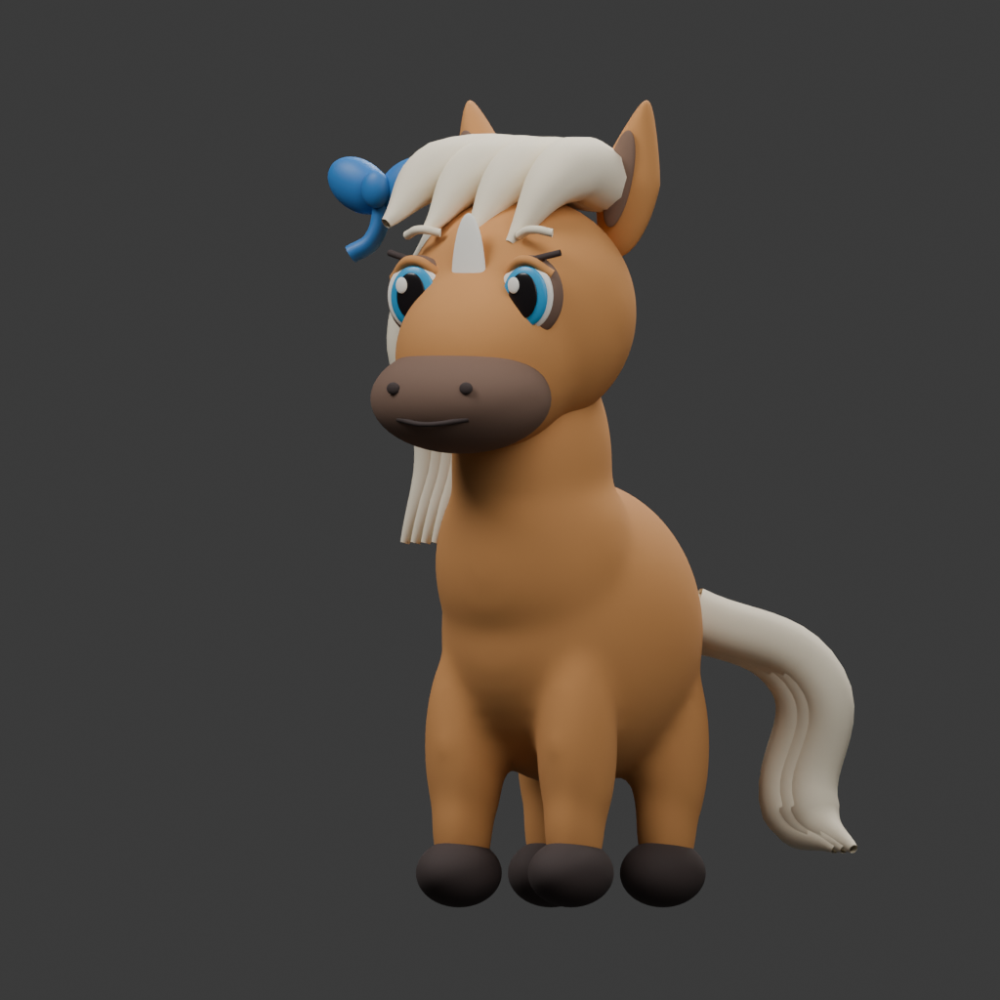
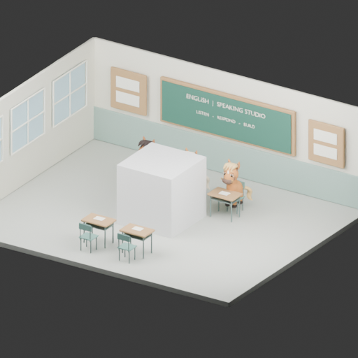

EdmundEducation · Character studio
Elsie, in the studio.
Isolated sculpt · awaiting visual reviewFront, three-quarter and side renders from the saved Blender master. The classroom is hidden so the proportions, face and hair can be assessed on their own. Select an image to inspect the full 1024 × 1024 render.
{kind=link}
{kind=link}
{kind=link}
What changed
The face has a short, broad muzzle, separate blue eye layers and a continuous pale blaze. The copper coat, ivory mane and tail, and cobalt bow on Elsie’s right follow her identity brief.
The torso and legs form one smoothed mesh. The mane and tail use curved, overlapping locks. Coat, eyes, hair, muzzle and bow have separate materials under a soft key, fill and rim light.
Visual review remains open
This is a sculpt study, not a production sign-off. The side silhouette, eye placement and the flow of the mane and tail still need comparison with the canonical artwork. The illustrated reference has a softer expression and more flowing hair detail.
The live classroom mascot has not been replaced. Rigging, game optimisation and Godot integration are held until this first character is approved.
Original blockout and Blender access proof
Blender 5.2.1 was used to inspect the original scene’s 264 objects, save a backup, create ASTRA_TOOL_TEST and save a 512-pixel proof render. The isolated review master contains named Front, Three-quarter and Side cameras. Mesh validation found no invalid mesh data.


Review prepared 8 September 2026. No changes were made to Phoebe, Eddy or the production classroom in this sculpt pass.